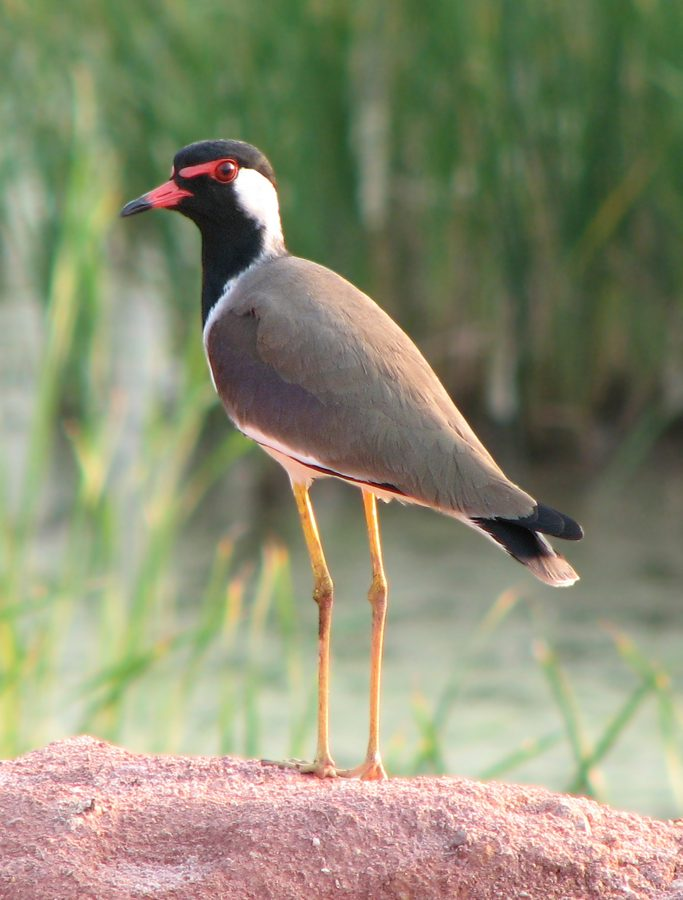

टिटहरीRed-wattled Lapwing
Vanellus indicus · Charadriidae · BRD-0020

- Scientific name
- Vanellus indicus (Boddaert, 1783)
- Family
- Charadriidae
- Hindi
- टिटहरी
- Status here
- native
- IUCN
- LC
When to look कब देखें
Present all year.
टिटहरी / Red-wattled Lapwing
Vanellus indicus (Boddaert, 1783) — Charadriidae
टिटहरी — हमारे खेतों, परती जमीनों और जलाशयों के किनारों पर पाई जाने वाली एक अत्यंत सतर्क और शोर मचाने वाली भूरी-काली जमीनी चिड़िया है। इसकी आंखों के आगे स्थित लाल रंग का मांसल लोथड़ा (facial wattle) और लंबी पीली टांगे इसकी मुख्य पहचान हैं। यह पक्षी जमीन पर बहुत तेजी से दौड़ता है और किसी भी संभावित खतरे को देखकर तुरंत हवा में उड़ जाता है। खेतों और बंजर भूमि पर इसके रहने से फसलों को नुकसान पहुंचाने वाले कीड़ों की आबादी नियंत्रित रहती है। इसकी चीखने जैसी अलार्म कॉल खेतों की शांति में गूंज उठती है, जिससे आसपास के अन्य वन्यजीवों को भी खतरे की पूर्व चेतावनी मिल जाती है।
Quick Identification त्वरित पहचान
| Feature | Description |
|---|---|
| Size | Medium wader-like bird (around 32–35 cm total length) with long, slender yellow legs |
| Plumage | Light bronze-brown upperparts; black crown, throat, and upper breast; white lower breast, belly, and sides of neck |
| Face | Striking red fleshy wattle in front of the eyes; red bill with a prominent black tip |
| Nests | A simple shallow scrape on bare ground, often lined with small stones or clay fragments |
| Behaviour | Highly territorial and aggressive when nesting; flies up screaming with deep, frantic wingbeats |
Field tip: Commonly encountered in pairs or small family groups near water bodies or ploughed fields. If you approach, they will run a short distance, stand upright, and then take flight, shouting their metallic alarm call "did-he-do-it", which serves as a warning to all wildlife in the area.
Morphology आकारिकी
Biometrics (typical measurements in the northern Indian plains):
| Measurement | Range |
|---|---|
| Total length | 320–350 mm |
| Wing (flattened chord) | 208–247 mm |
| Tail | 104–128 mm |
| Tarsus | 70–83 mm |
| Bill (culmen from base) | 31–36 mm |
| Weight | 110–250 g |
Plumage: The upperparts are a light bronze-brown with a subtle green-purple sheen on the shoulders. The head, neck, and upper breast are black, which contrasts sharply with a broad white band running from the back of the eyes down the sides of the neck to the white underparts. The tail is white with a broad black subterminal band.
Bare parts: A prominent red fleshy wattle extends from the front of the eye to the lores. The bill is bright red with a black tip. The irises are red, surrounded by a thin red orbital ring. The long legs and feet are bright yellow.
Vocalisations
The Red-wattled Lapwing is one of the most vocal birds in the agricultural landscape.
- Contact and alarm call: A loud, piercing, metallic scream resembling did-he-do-it or pity-to-do-it (ranging from 2.0 to 4.0 kHz), repeated frantically when a predator or human approaches the nesting site.
- Song/Breeding call: A rapid, stuttered chattering did-did-did-did-he-do-it uttered during display flights and territorial boundary skirmishes.
Ecological Role पारिस्थितिक भूमिका
Ground-dwelling insectivore. Red-wattled Lapwings forage by walking or running in short spurts on open ground, picking up surface-dwelling invertebrates.
- Sentinel of the landscape: Known as the self-appointed sentinel of the open plains, its loud alarm calls warn other birds and mammals of approaching danger, playing a vital role in communal predator detection.
- Agricultural pest controller: They consume large numbers of insect larvae, snails, worms, and agricultural pests, keeping soil pest populations under control.
Life Cycle / Phenology जीवन चक्र
- Breeding season: March to August, coinciding with the hot dry season and the onset of the monsoon.
- Nesting: The nest is a simple scrape on the bare ground, often located near a pond, canal bund, or in ploughed agricultural fields. They sometimes line the rim with small pebbles, dry cow dung, or earthen lumps.
- Eggs: Usually 4 pyriform (pear-shaped) eggs, pointed inward to fit in the scrape. The eggs are olive-brown with dark spots, providing perfect camouflage against the soil.
- Incubation: 26–30 days, shared by both parents. During hot afternoons, parents soak their belly feathers in water to cool the eggs (belly-soaking).
- Fledging: The precocial chicks hatch fully feathered and leave the nest within hours, following parents to feed. They are fully fledged and independent in about 38–42 days.
Host Plants or Prey आहार
Primary food items:
- Insects: Beetles, ants, caterpillars, grasshoppers, crickets, and termites.
- Other Invertebrates: Earthworms, small freshwater mollusks, and spiders.
- Plant Material: Occasional grass seeds and tender shoots.
Predators / Natural Enemies शत्रु
- Jackal (Canis aureus) and Mongoose (Herpestes edwardsii) — major predators of ground nests, feeding on eggs and chicks.
- Bengal Monitor (Varanus bengalensis) — raids nests and feeds on clutches.
- House Crow (Corvus splendens) and Black Kite (Milvus migrans) — steal eggs when parents are distracted.
Agricultural / Human Relevance कृषि प्रासंगिकता
Farmer's ally. By feeding on pests in ploughed fields, they assist in keeping crop pest populations low.
Nesting conflicts. Their habit of nesting in open fields and on gravel roads makes them highly vulnerable to agricultural machinery, tractors, and livestock. Farmers in eastern UP often spot nests during ploughing and carefully leave a small patch undisturbed.
Expected Locally स्थानीय रूप से अपेक्षित
Not a field record. Written from published accounts for eastern Uttar Pradesh. No confirmed local sighting yet — if you have seen it, that is what the atlas needs.
अभी तक स्थानीय पुष्टि नहीं। यह विवरण प्रकाशित स्रोतों से है, किसी अवलोकन से नहीं।
A very common resident in the Basti, Ayodhya, and Khalilabad regions. They are found in almost every open field, on the margins of village tanks (talab), and along canals. Their nests are frequently found on the flat, gravelly roofs of local houses or on railway margins, where they vigorously defend their territory by dive-bombing dogs and crows.
Distribution वितरण
Global range: Widespread across West Asia, the Indian subcontinent, and Southeast Asia, from Iraq and Iran, through Pakistan, India, Nepal, Bangladesh, to Myanmar, Thailand, Vietnam, and Malaysia.
In India: Found across the entire country in open plains, hills up to 1,800 metres, and coastal flats.
In Uttar Pradesh: A common resident bird present across all agricultural and river basin areas.
In Basti district / eastern UP: Abundant year-round in agricultural fields, brick kilns, and lake margins.
Range notes: Populations are stable and secure due to extensive farmland availability.
Research Questions शोध प्रश्न
Anyone can investigate these | कोई भी इन प्रश्नों की जाँच कर सकता है
- How do Red-wattled Lapwings select nesting locations in agricultural fields to avoid tractor damage? / कृषि क्षेत्रों में टिटहरी जुताई और ट्रैक्टरों से बचने के लिए घोंसले के स्थानों का चयन कैसे करती है? — Map nest locations relative to crop types and farming cycles.
- What is the frequency of belly-soaking behaviour in nesting lapwings at different ambient temperatures? — Record behavior during peak summer afternoons to study thermal regulation.
- How do other bird species react when a lapwing sounds its alarm call? / टिटहरी की अलार्म कॉल बजने पर खेतों में रहने वाले अन्य पक्षी (जैसे मैना या बगुले) कैसी प्रतिक्रिया देते हैं? — Observe alarm response behavior of nearby birds.
- How do lapwings protect their camouflaged eggs from dogs and crows when they are away from the nest? — Monitor nest attendance and distract displays (such as broken-wing mimicry).
- What materials are most preferred by lapwings in your area for lining their nests? — Count and catalog the composition of nesting scrapes (pebbles, plastic bits, twigs).
Similar Species मिलती-जुलती प्रजातियाँ
| Species | How to tell apart | हिंदी |
|---|---|---|
| Yellow-wattled Lapwing (Vanellus malabaricus) | Lacks black throat; sandy-brown plumage; bright yellow facial wattle; prefers dry areas | पीली-टिटहरी — पीला लोथड़ा और छोटा आकार |
| River Lapwing (Vanellus duvaucelii) | Grey-brown throat; black crest; black patch on belly; lacks red wattle; restricted to riverbeds | नदी टिटहरी — लाल लोथड़े का अभाव, काली कलगी |
| White-tailed Lapwing (Vanellus leucurus) | Unpatterned brown back; white tail; very long yellow legs; lacks black breast band and red wattle | सफेद-पूंछ टिटहरी — छोटी और केवल सर्दियों में |
Field rule: Medium size, long yellow legs, black head and chest, red facial wattle, and loud "did-he-do-it" alarm calls identify the Red-wattled Lapwing.
Taxonomy & Classification वर्गीकरण
Original description. Pieter Boddaert described the Red-wattled Lapwing as Tringa indica in 1783 in his work Table des planches enluminéez d'histoire naturelle de M. D'Aubenton (p. 50). The description was based on Daubenton's plate 807, with Goa, India, designated as the type locality. The genus name Vanellus is a Latin diminutive meaning "little fan", referring to the sound of lapwings' wings in flight, and indicus refers to India.
Subspecies. Four subspecies are recognized, with the following occurring in India:
| Subspecies | Authority | Range | Notes |
|---|---|---|---|
| V. i. indicus | (Boddaert, 1783) | Pakistan, Northern & Central India, Bangladesh | UP subspecies; nominate form; moderately large and dark |
| V. i. lankae | (Koelz, 1939) | Southern India, Sri Lanka | Smaller and darker bronze-green upperparts |
| V. i. atronuchalis | (Jerdon, 1864) | Northeast India, Myanmar, Indochina | Has a distinctive white stripe on the neck |
Family and order placement. Placed in the order Charadriiformes, family Charadriidae (plovers and lapwings). Charadriidae consists of small-to-medium wading birds known for rapid foot-movements during foraging.
Phylogenetic notes. The genus Vanellus contains about 24 species globally. Vanellus indicus is closely related to the African Spur-winged Lapwing (Vanellus spinosus).
IUCN status rationale. Listed as Least Concern (LC). Widespread and common across its range, with stable population trends. It benefits from agricultural clearing and creation of artificial wetlands.
Photo Gallery फोटो गैलरी
References संदर्भ
- Boddaert, P. (1783). Table des planches enluminéez d'histoire naturelle de M. D'Aubenton. p. 50.
- Ali, S. & Ripley, S.D. (1999). Handbook of the Birds of India and Pakistan. Vol. 2. Oxford University Press, New Delhi.
- Grimmett, R., Inskipp, C. & Inskipp, T. (2011). Birds of the Indian Subcontinent. 2nd ed. Christopher Helm, London.
- Vyas, R. (1997). Nesting and breeding behavior of Red-wattled Lapwing. Journal of the Bombay Natural History Society, 94(2), 300-305.
- BirdLife International (2024). Vanellus indicus. IUCN Red List of Threatened Species. Ver. 2024.
- GBIF Occurrence Data — Vanellus indicus, Uttar Pradesh (2010–2025).
Source file: species/fauna/birds/red_wattled_lapwing.md